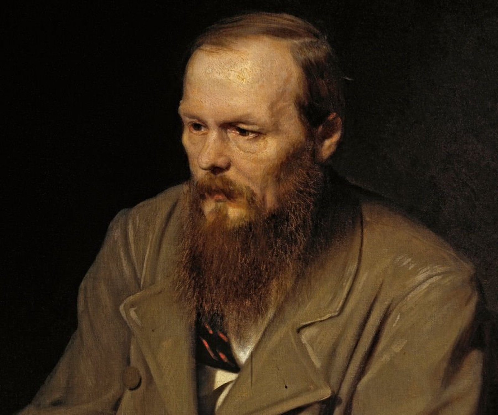

Featured Authors
Clive Staples Lewis was a British writer and lay theologian. He held academic positions in English literature at both Oxford University and Cambridge University. He is best known for his works of fiction, especially The Screwtape Letters, The Chronicles of Narnia, and The Space Trilogy, and for his non-fiction Christian apologetics, such as Mere Christianity, Miracles, and The Problem of Pain.
Fyodor Mikhailovich Dostoevsky, sometimes transliterated as Dostoyevsky, was a Russian novelist, short story writer, essayist, and journalist. Dostoevsky's literary works explore the human condition in the troubled political, social, and spiritual atmospheres of 19th-century Russia, and engage with a variety of philosophical and religious themes.
Joanne Rowling, known by her pen name J. K. Rowling, is a British author, philanthropist, film producer, and screenwriter. She is the author of the Harry Potter series, which has won multiple awards and sold more than 500 million copies as of 2018, and in 2008 became the best-selling book children's series in history.
G.K. Chesterton was one of the dominating figures of the London literary scene in the early 20th century. Not only did he get into lively discussions with anyone who would debate him, including his friend, frequent verbal sparring partner, and noted Irish playwright George Bernard Shaw, but he wrote about seemingly every topic, in every genre, from journalism to plays, poetry to crime novels. "He said something about everything and he said it better than anyone else," writes Dale Ahlquist, president of the American Chester Society, on the society's website. Most of Chesterton's literary output was nonfiction, including thousands of columns for various periodicals, but today he is best remembered for his fictional work—a mystery series about Father Brown, a Catholic priest and amateur detective.
Stephen Edwin King is an American author of horror, supernatural fiction, suspense, crime, science-fiction, and fantasy novels. Described as the "King of Horror", a play on his surname and a reference to his high standing in pop culture, his books have sold more than 350 million copies, and many have been adapted into films, television series, miniseries, and comic books.
To read more books from these authors and others, please feel free to download our apps on the stores below.